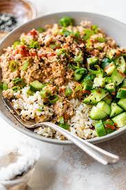

Spicy Canned Salmon Salad Rice Bowl

Fantastic easy meal!
Why not give it a try tonight?
Ingredients
- 1 cup chopped English cucumber
- 1 (14 3/4 ounce) can pink salmon, skin and bone removed, drained and flaked
- 2 ½ tablespoons chile-garlic sauce (such as Sriracha®)
- 1 tablespoon light mayonnaise
- 1 tablespoon rice vinegar
- 1 cup cooked white rice
- 1 avocado - peeled, pitted, and sliced
- 1/2 teaspoon sesame seeds
- 1 tablespoon chopped green onion for garnish (optional)
Steps
- Combine chopped cucumbers and soy sauce in a small bowl and set aside.
- In a small bowl, combine the salmon, Sriracha®, mayonnaise, and rice vinegar.
- In a bowl place cooked rice and top it with the salmon mixture, sliced avocado, and chopped cucumber mixture. Sprinkle with sesame seeds. Top with extra Sriracha and green onions if desired.
Recipe link